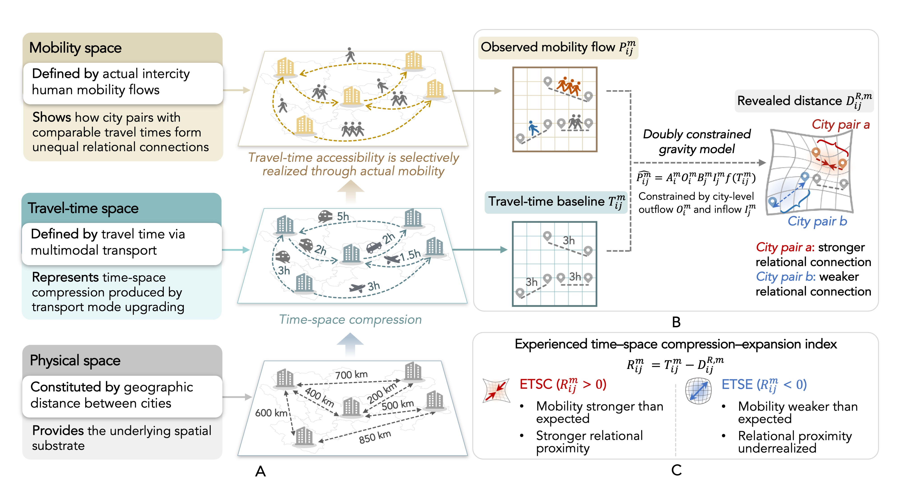
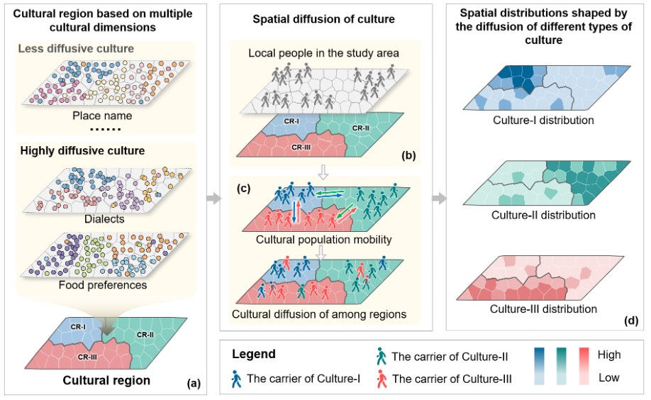
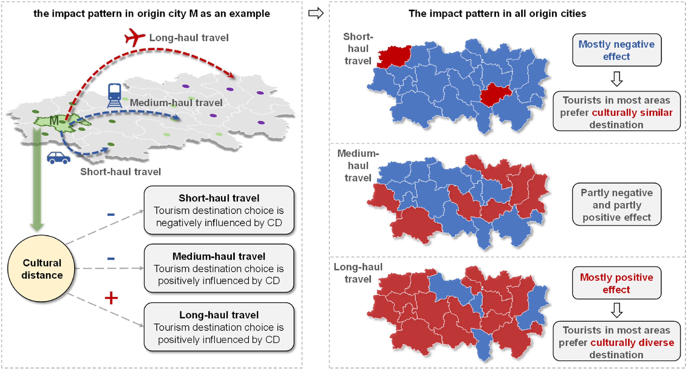
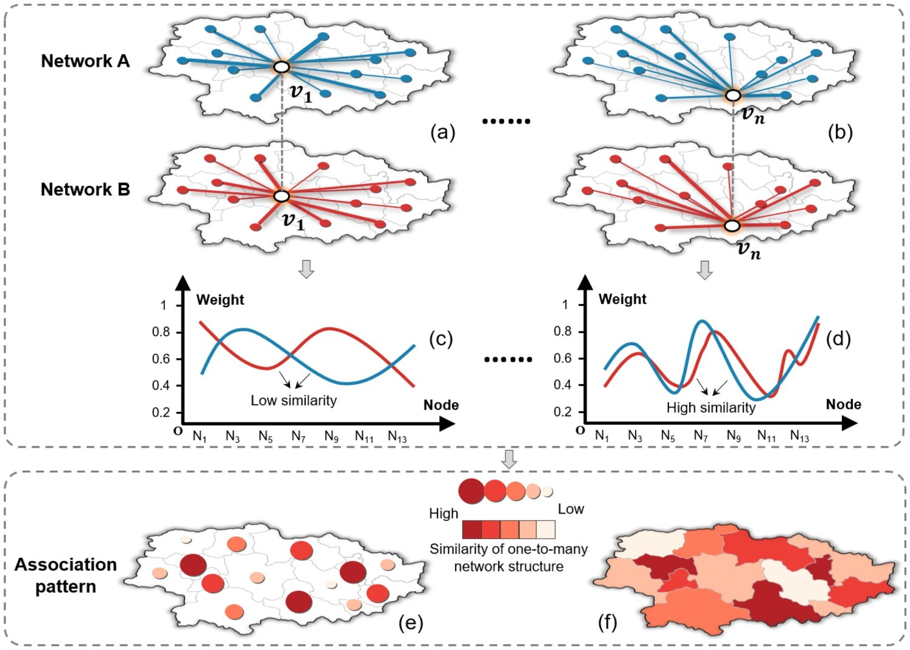
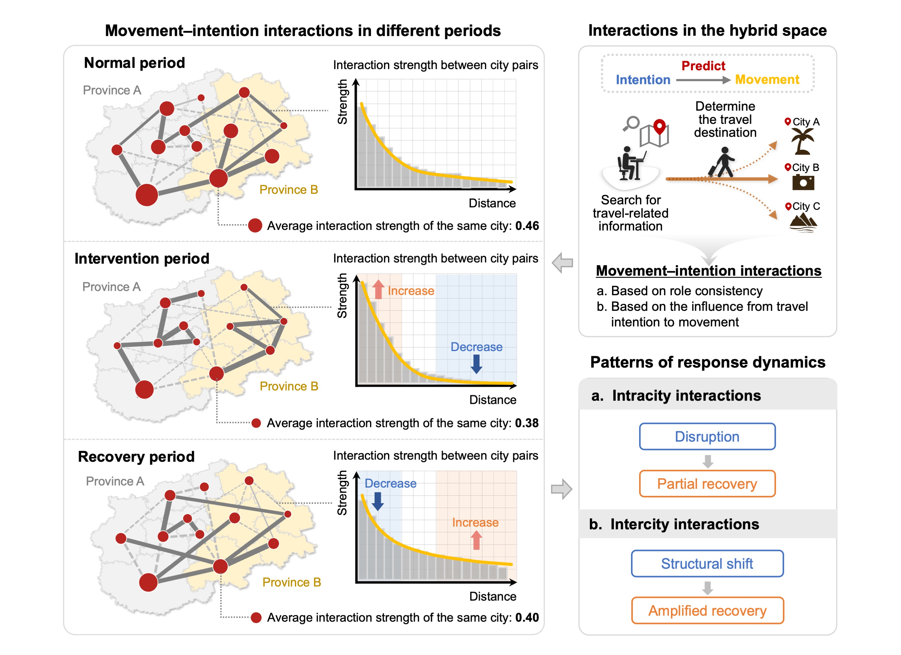
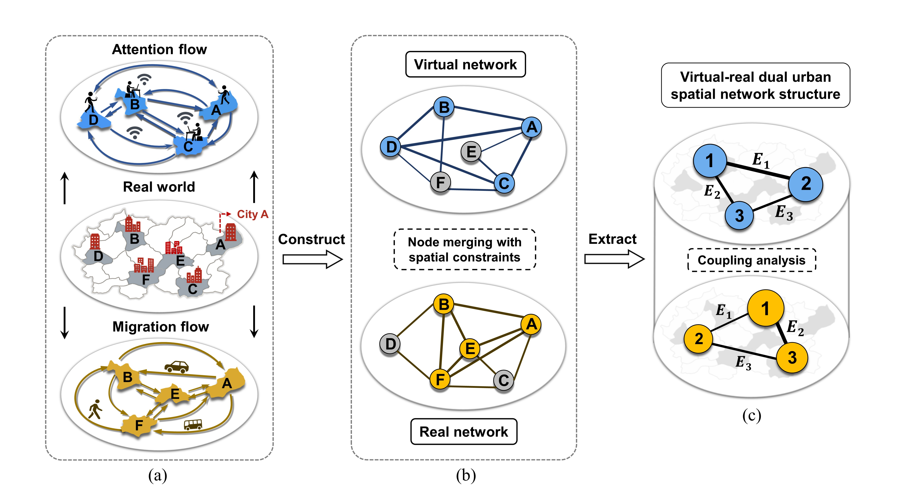

About
Understanding cities across physical and digital space.
I am a master’s student at the School of Urban Planning and Design, Peking University. My research lies at the intersection of GIScience, Digital Geographies, and Urban AI, with a broader interest in understanding how human activities are organized, represented, and transformed across physical and digital spaces.
My work focuses on human mobility and travel behavior, particularly the relationships between online behavior and corresponding activities in physical space. More recently, I have extended this research to Urban AI, with a particular focus on generative AI and large language models. I examine how LLMs understand and represent cities, how they may influence people’s spatial perceptions, decisions, and real-world urban behavior, and how they can serve as analytical tools for interpreting urban data and predicting urban dynamics.
Experience
Education
-
Sept 2024 – Present
Peking University, China
-
Sept 2020 – Jul 2024
Nanjing Normal University, China
Research
-
May 2026 – Present
MIT-UF-NU Joint Summer Research, USA
Selected Awards
-
Sept 2025
National Scholarship, Peking University
-
Sept 2025
Merit Student, Peking University
-
Jun 2024
Distinguished Graduate Award, Nanjing Normal University
-
Oct 2024
Outstanding Undergraduate Thesis of Jiangsu Province
-
May 2024
Merit Student of Jiangsu Province
-
May 2024
Top 10 Outstanding Young Students Award, Nanjing Normal University
-
Dec 2023
National Scholarship, Nanjing Normal University
-
Dec 2022
President’s Special Scholarship, Nanjing Normal University
-
Nov 2022
Grand Prize, National College Students’ GIS Application Skills Competition
-
Sept 2022
First Prize, Esri-Cup Chinese College Students GIS Software Contest, Team leader
Research
* Corresponding author
01Research theme
GIScience, Spatial Interaction, and Travel Behavior
I investigate how people move across cities and how these dynamic flows collectively shape intercity relations. I develop spatiotemporal flow network analysis methods and regional diffusion process models to identify spatiotemporal patterns in human mobility flows and structural dynamics in intercity networks, and examine how individual and contextual factors influence travel behavior.
-
When connection is not closeness: Revealing experienced time–space compression and expansion through multimodal intercity mobility flows in China
Under review, 2026
-
Spatially explicit individual-based modeling of regional cultural evolution through mobility
Under review, 2026
-
How does cultural distance affect tourism destination choice? Evidence from the correlation between regional culture and tourism flow
Applied Geography, 2024
-
An approach for exploring spatial associations in multi-layer networks based on convergent and divergent flow structures
International Journal of Digital Earth, 2024
02Research theme
Digital Geographies and Urban AI
As digitalization deepens, urban activities increasingly extend from physical space into virtual space. I investigate how online and offline activities interact with and influence one another, and how these interactions collectively reshape urban mobility patterns and intercity relations. Focusing on generative AI, I examine systematic biases in how large language models understand urban activity spaces and how these technologies may further influence urban perception and mobility behavior.
-
Intercity human dynamics during holidays through the lens of travel movement–intention interactions in the hybrid physical–virtual space
International Journal of Geographical Information Science, 2025
-
Integration of migration and attention flow data to reveal association of virtual–real dual intercity network structure
Cities, 2023